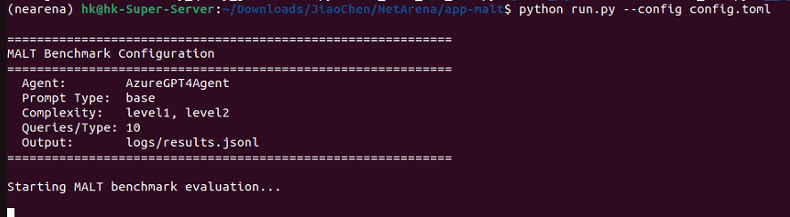
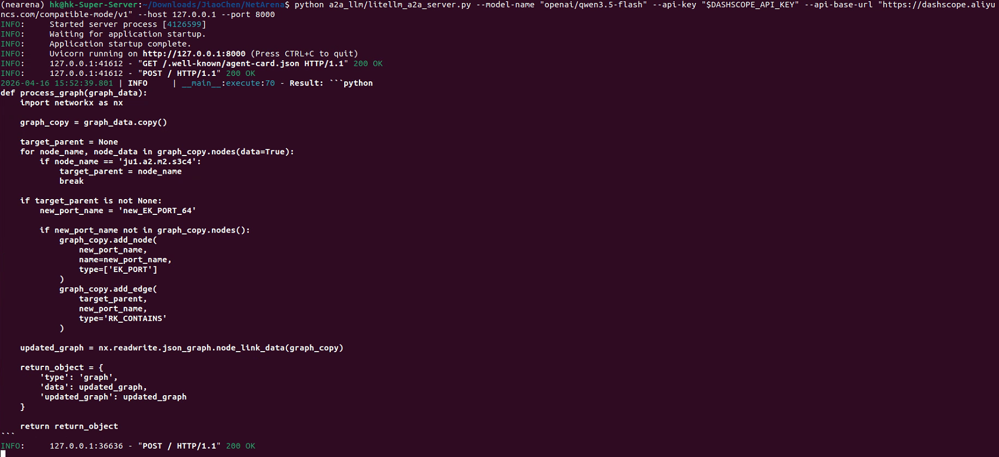

Exploring AI agent benchmarks for network automation, from reproduction to wireless domain extension
This project forks NetArena (ICLR 2026) to study how AI coding agents perform on network automation tasks. Our goal is to reproduce the existing benchmarks, analyze the framework design, and extend it to wireless network optimization tasks that are currently absent from all existing benchmarks.
MALT evaluates whether an LLM can act like a network engineer: understand a task instruction in natural language, then write correct Python code to manipulate a data center network topology graph.
"Add new node with name new_EK_PACKET_SWITCH_9 type EK_PACKET_SWITCH, to ju1.s4.dom. Return a graph."
def process_graph(graph_data):
import networkx as nx
graph_copy = graph_data.copy()
target_parent = 'ju1.s4.dom'
graph_copy.add_node('new_EK_PACKET_SWITCH_9',
type=['EK_PACKET_SWITCH'])
graph_copy.add_edge(target_parent,
'new_EK_PACKET_SWITCH_9',
type='RK_CONTAINS')
return {'type': 'graph', 'data': graph_copy}
| Correctness | Was the node added correctly? Right type? Right parent? |
| Safety | Were any existing nodes or edges accidentally deleted? |
| Latency | How long did the agent take to respond? |
Benchmark App Agent Server LLM API
| | |
|-- "Add switch to node X" ---->| |
| |-- forward task --------->|
| | |
| |<-- return Python code ---|
|<-- return code ---------------| |
| | |
| Execute code in simulator |
| Compare result vs ground truth |
| Output: Correct/Wrong + Safe/Unsafe + Latency |
| Level | Operations | Count | Example |
|---|---|---|---|
| Level 1 | add, list, rank, remove | 2000 | Add a switch under node X |
| Level 2 | remove + count/list/rank | 1500 | Remove all ports, then count remaining |
| Level 3 | add + count/list/rank | 1500 | Add 3 switches, then sort by name |
Think of it as a coding exam: the question is "use Python to operate a graph database", the student (LLM) writes code, the examiner (benchmark) runs the code and checks against the answer key. NetArena generates exam questions dynamically so the LLM cannot memorize answers.
| Benchmark | MALT (Data Center Capacity Planning) |
| Agent | Qwen3.5-Flash via DashScope |
| Server | Ubuntu 22.04, 40 cores, 62GB RAM, NVIDIA GPU |
| Complexity | Level 1, Level 2 |
| Protocol | A2A (Agent-to-Agent) |


| Benchmark | Venue | Tasks | Simulator | Domain |
|---|---|---|---|---|
| NetArena | ICLR 2026 | Route, MALT, K8s | Mininet, Custom | Wired / IT |
| NetLLMBench | IEEE 2025 | BGP, OSPF, Static | Containerlab + FRR | Wired L3 |
| LLM4NetLab | SIGCOMM 2025 | Fault diagnosis | Containerlab + FRR | Wired L3 |
All three benchmarks focus exclusively on wired network configuration (L3 routing, data center, Kubernetes). No existing benchmark covers wireless network optimization tasks such as power control, UAV trajectory planning, beamforming, spectrum management, or network slicing.
| Task | Domain | Difficulty | Simulator | Status |
|---|---|---|---|---|
| Power Control | Resource Allocation | Medium | Pure Python | Planned |
| UAV Trajectory Optimization | Coverage | Hard | UavNetSim / Python | Planned |
| Beamforming Design | Physical Layer | Hard | Pure Python | Planned |
| Spectrum Management | Resource Allocation | Medium | Pure Python | Planned |
| Network Slicing | Orchestration | Hard | Pure Python | Planned |
| Energy-Efficient Scheduling | Green Networking | Medium | Pure Python | Planned |
| Paper | Venue | Relevance |
|---|---|---|
| Intent-LLM (VipeeGPT) | IEEE TCCN 2025 | LLM code generation for network config via Python API |
| LLM for Telecom Survey | IEEE COMST 2025 | Comprehensive survey of LLM applications in telecom |
| PC-LLM | arXiv 2024 | LLM for wireless power control |
| BeamAgent | arXiv 2025 | LLM-aided MIMO beamforming |
| SIMCODE | arXiv 2025 | NL to ns-3 simulation code benchmark |
# Clone and setup git clone git@github.com:tenderzada/NetArena.git cd NetArena conda create -n netarena python=3.12 -y conda activate netarena pip install -e . pip install litellm loguru "a2a-sdk[http-server]" uvicorn cattrs tomli httpx jsonlines prototxt_parser scipy # Terminal 1: Start Agent Server export DASHSCOPE_API_KEY=sk-xxx python a2a_llm/litellm_a2a_server.py \ --model-name "openai/qwen3.5-flash" \ --api-key "$DASHSCOPE_API_KEY" \ --api-base-url "https://dashscope.aliyuncs.com/compatible-mode/v1" \ --host 127.0.0.1 --port 8000 # Terminal 2: Run Benchmark cd app-malt cp config.template.toml config.toml python run.py --config config.toml